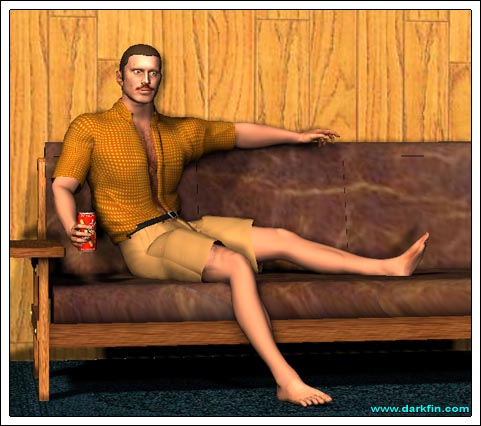
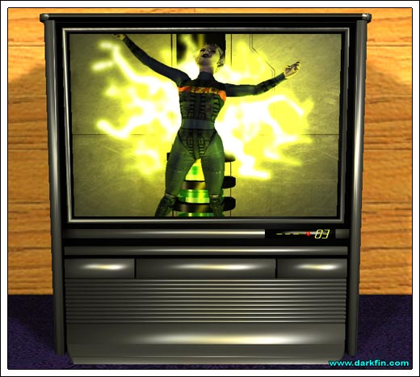
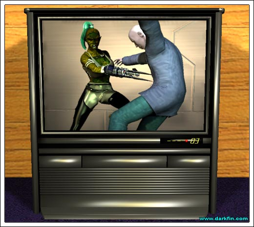
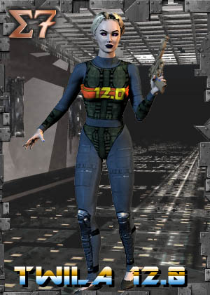
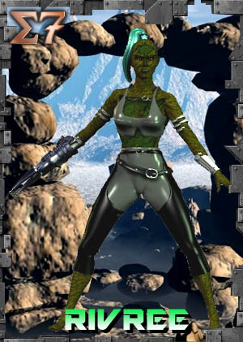
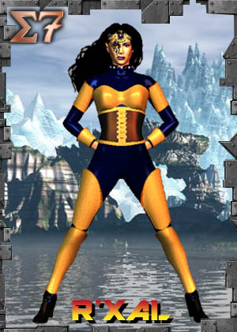
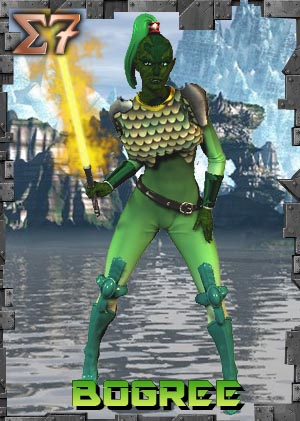
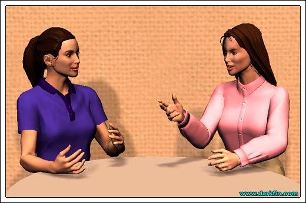

Anita (Holding them up to her) Which one makes me look sexier?
Craig (Still watching the TV) You look good in both
Anita C'MON - help me pick
Craig What's the point, it won't be on for very long tonight
Anita (Smirking) True, but Marcy will probably want to go through the motions of dinner, first
Craig Then go with the rust - the way you slop your food, the stains won't show as much
Anita (Hanging them up) I like how you think, Captain... ooh, it's time for Sig7!
Craig HEY, I was watching that!
Anita NASCAR? - GIMME A BREAK
Craig It's a legitimate sport
Anita (Flopping into a leather chair) It's an excuse for a bunch of rednecks to get dressed up like clowns without people making fun of them and also to go speeding without getting pulled over by the cops
Craig (Chewing) What's your point?
Anita Heh... speaking of cops, one of my sources says that McBride is about to be collared
Craig Do you think Darkfin will let that happen?
Anita Doubtful, but she won't risk doing anything in broad daylight
Craig Do you still think Morrigan is innocent?
Anita Yeah, but until we can figure out the real killer, I'm not going to sacrifice my dad for her
Craig Why are you worried about Frank?
Anita If the case doesn't stick to KCON's girl-next-door, my dad is the next target - the community wants justice for Father Gregory and they want it pronto, forget the little things like due process and circumstantial evidence
Craig (Wincing) Ugh, I really didn't need to see her face right now
Anita Have you spoken to her at all since the fight?
Craig She called and we talked for few minutes... she blames me for breaking Martel's wrist - I wish I had broken his neck
Anita What a bitch - at least you won't have to put up with her grating accent anymore
Craig I happen to think it's lovely
Anita (Rolling her eyes) Whatever
Craig I had to call my AA sponsor the other night, this whole thing makes me want to drink again
Anita Oh, PLEASE, Craig - she is so not worth that, you've made great progress, don't throw it all away on a washed-up supermodel turned B-actress
Craig I'm concentrating on my daughter's visit and she is what's getting me through this
Anita (Reaching over and patting his arm) Awesome
Craig Thanks
Anita In the future, try to find a single woman - or, if you can't, at least go back to obsessing over my sister - I know you could kick Sandy's ass and he doesn't have the clout to kill your career
Craig That's real funny, Fiore
Anita SHHH - Marcy's on!
Craig I hope she's better in bed than she is as an actress
Anita (Raising an eyebrow) How do you think she got that Emmy?
Craig SHE WAS A KID... oh, don't even go there
Anita If it makes you feel any better, my little thespian inamorata is not a box of chocolate kittens, either - I would drop her like a hot rock if I didn't want to do her so bad
Craig Do her or "Jamie?"
Anita Shut up, Craig

Anita (Stunned) NO FUCKING WAY - THEY JUST KILLED TWILA 12.0 - THAT IS SO WRONG
Craig Is that the android with the alternative lifestyle?
Anita I CAN'T BELIEVE THEY DID THAT - THEY SAID THEY WOULDN'T DARE - LYING BASTARDS
Anita (On the verge of tears) OF COURSE - NOW, RIVREE HAS REVERTED BACK TO HER CARNIVORE STATE AND HAS GONE ON AN INSANE MURDER SPREE - NICE

Craig (Finishing his bowl of snacks) Yep, what kind of sci-fi universe are we living in when the robot chick and the gator girl can't find true happiness?
Anita (Scowling) Don't mock it, Phelps - it's easy for you straight white guys to just laugh it off - every show out there is brimming with your brotherhood while people of color and different orientations continue to be disposable token objects and/or a plot device for ratings-based exploitation... IT'S INSENSITIVE AND SICKENING
Craig Relax, it's just a TV show

Anita Nu-uh, that feeble excuse isn't going to cut it any longer - mainstream white America wants desperately to hide behind the simple facade of TV's sole purpose being entertainment, they like their little world exactly the way it is, they don't want anyone or anything rocking the boat - WRONG - the day the citizens of this country go out and deliberately try to educate themselves by reading and thinking beyond a fourth grade mentality, THEN, and only then, will I say that TV should be nothing more than entertainment - until that unlikely event occurs, television in particular has a social responsibility to enlighten as well as entertain!
Craig Jesus Christ, are you running for office? - it's a silly syndicated space show with a giant dragon that shoots laser beams from its eyes
Anita And we all know how there are no freaky creatures like that in REAL life

Anita Look, it's called media representation - God forbid we should see a Latino up there, or a Native American, or a differently-abled person in a meaningful role, let alone a happy gay couple getting some non-implied action under the sheets - of course, when Riv finally brings Twi back to her nest and they hook up, she gets electrocuted almost immediately afterward and steps away from where the deed went down
Craig In case you haven't noticed, countless others - white guys and heteros - have died on Sig7
Anita Yes, but they are in the MAJORITY - how many straight white leads are there, seven, eight? - the one and only prominent lesbian couple currently on television, once again, falls into the psycho villain/dead dyke cliche - it's been done over and over and over again, our sanctuary is gone, the hopelessness perpetuates, and it gleefully reinforces the bigotry of the bashers out there
Craig Wait a minute, you still have the gay joker guy on this show
Anita You mean JuJingo the royal jester? - complete window dressing - he's a stereotypical flamboyant queer who is only there to make the audience laugh and give R'xal fashion tips, he's a peripheral character who gets a grand total of 15 minutes of screen time a season, never gets laid, and only refers to his boyfriend as the butt - pun intended - of a joke... sorry, that's not helping the cause
Craig It shouldn't be about "the cause" - it's about the overall vision and story arc

Anita Yes, but there were other writing options - instead, we get a weak, unstable victim and a death that had no real reason or significance beyond shock value
Craig Sometimes death doesn't have to be significant
Anita You're right - when you have hundreds of other Sapphic couples to take their place... BUT YOU DON'T - this death demanded a sound purpose but got screwed over instead
Craig (Placing the empty bowl on his face) I liked you better when you were making fun of NASCAR
Anita I'm sorry to be so challenging right now - I'm just more than a little pissed
Craig Expecting someone?
Anita (Going over to the door) Not really - probably Mormons, go get the pepper spray
Marcy (Big grin) Hello, Lieutenant
Anita Hey, Marcy, come on in
Craig (Sitting up) Hi, Ms. Nolan
Marcy (Entering) Oh, Captain Phelps - I'm sorry, am I interrupting?
Craig Not at all
Marcy Ursi speaks very highly of you
Craig She does?

Marcy Well, the few times when I'm actually forced to speak with her, yes
Anita I, uh... I thought we had plans later at the inn?
Marcy Please don't hate me but we're going to have to reschedule - I'm needed on the set tonight, they're re-shooting the season finale
Anita Ah
Marcy (Holding up a bag of take-out) I was hoping I could make it up to you with a quick Chinese meal
Anita Crunch, don't you need to get going?
Marcy (Seductively) I brought Cashew Chicken, Spare Ribs, Beef Lo Mein...
Craig Beef Lo Main?
Anita CRAIG
Craig (Taking his keys and heading for the door) Right, I'll see you on our shift tomorrow, Fiore... have fun - Ms. Nolan
Marcy Nice to see you again
Marcy (Unpacking the food) I really am sorry about this - we weren't notified of the schedule change until this morning
Anita (Getting some drinks) What happened?
Marcy Did you see the latest episode?
Anita (Grimacing) Just a few moments ago, unfortunately
Marcy TPTB underestimated the backlash - word leaked out a few weeks ago about the impending death of Twila - the Crunchy Granolas got their Birkenstocks in a bunch and started a massive protest campaign
Anita (Sitting down at the table) Those have never worked before
Marcy (Joining her) And it wouldn't have this time EXCEPT Jessie Escobar is backing them and doing her best to tweak the other producers, specifically Doug Martel
Anita He's not one of my favorite people, that's for sure
Marcy Because of the fan outrage, the season finale is now a do-over - we're bringing Twila 12.0 back to life... Twila 13.0, I assume - hell, the writers lucked out - she's an android and can be instantly reprogrammed
Anita Maybe, but the damage has already been done and this cheesy fix is not going to cut it - Rivree has already gone nuts and slaughtered half of the Swamp Resistance
Marcy Hey, I don't write the show, I just act on it
Anita Don't you feel any kind of responsibility, especially with your "status?"
Marcy Just because I'm bi in my personal life doesn't mean it needs to be written into the show - I was all for it as long as they didn't make me the spotlight dyke - I've already been painted by that brush, ten times over, from Jamie - in fact, I made the writers ratchet up my affair with the volcano god just to deflect any kind of suspicion
Anita Unbelievable

Marcy Try to put yourself in my shoes, I have a lucrative career to protect - the straights hate bisexuals because they want us to be monogamous and miserable just like them - the gays hate us because they want us to pick sides and be political poster children - I'm sorry, I'm a good actor, not a good activist
Anita (Under her breath) Craig begs to differ
Marcy Excuse me?
Anita Want some more Cashew Chicken?
Marcy (Taking some) Thanks
Anita What truly angers me is that people in general had no problem with the warrior moon prince graphically raping his twin sister and then brutally beheading half of the solar slaves but then objected to a simple kiss between Twi and Riv - that's pathetic in this day and age!
Marcy I totally agree
Anita Well, in order for that to change - people need role models, on and off the TV screen - you and your show have the power to do that
Marcy I was forced into being a role model when I was on "Lessons" - frankly, I'm tired of it - and the show DID do that for a little bit... be grateful for what you got!
Anita Grateful for scraps? - scraps that get pissed on and thrown in our face? - I don't think so
Marcy (Mocking smile) More ribs?
Anita No, thanks
Marcy Just do what everyone else does... blame it on Mrs. Martel and her old blob of a husband
Anita How did you ever get involved with this show?
Marcy After my wilderness years, I sobered up and put out some feelers for a job beyond bad dinner theater - Jessica Goldstein-Escobar was a lowly writer's assistant on Life's Little Lessons but she managed to move on to a stellar screenwriting career
Anita So, she's the creative genius behind Sig7?
Marcy Yep, but she needed Martel's money to get it going, she was smart enough to stay directly involved with the show when it spun off from Ancient Space - there was only one thing she had to do... make his wife the star
Anita Ay, ay ay
Marcy Ursula literally was the queen of the show, no doubt about it - it was groundbreaking and highly successful at the time - but when she pulled the major vanity stunt of forcing the writers to include her pregnancy into the story, it all but decimated the series
Anita I remember reading about that - she said she was doing it to prove that pregnant women could be sexy, kick-ass mamas
Marcy Yeah, it was a noble sentiment EXCEPT it didn't fit the character or the timing - it was all about Ursula and nothing else
Anita Do I detect a bit of resentment in your voice?
Marcy Oh, always with that bitch - like she didn't have more than a decade of fertility ahead of her to crack some eggs
Anita That's really a decision that belongs to her and her husband, no one else
Marcy Bullshit, when you sign a multi-year contract, you're basically signing a period of your life away and you know it - you can't even get your hair cut without permission
Anita But she has privileges
Marcy Of course... and she also has this grand notion that she's going to walk right off of Krakus Prime and straight into an Oscar-winning movie role
Anita It could happen
Marcy Don't bet on it - too bad her hubby doesn't have the spine to go against her - rule #1, her character appealed to teenage boys, drag queens, lesbos, and disenfranchised het freaks who hold her up as some kind of ideal - she is, with her beauty, essentially a huge spooge vessel and that's how you play her up to the audience, that's your meal ticket - the last thing any of these groups wanted to see was R'xal the Mommy Machine, especially carrying the old rich raisin Martel's spawn
Anita Stop it, I'm trying to enjoy my noodles
Marcy It's all about fantasy in this business and so many people forget that - so, Jess calls me up, says she's writing a character that would be perfect for me
Anita A half-frog woman?
Marcy I know, my reaction as well, but I needed the gig and I believed in her brilliance - then, The Timing Fate stepped in - The Rerun Network started airing Life's Little Lessons, and a whole new generation of Jamie fans sprung up - couple these with the first gen ones that will follow me forever, even when I'm making old lady shows, and that was the one-two punch that blasted Bogree and Sig7's ratings through the freaking roof
Anita (Cracking open her fortune cookie) Cool
Marcy (Stealing a bit of Anita's cookie) Ursula thought she'd crush my character in a few episodes but with the numbers and Jess backing me up, there was no way she could do it - we're now in the 5th season and look to go another two at least
Anita (Quizzical look) You want to play a space frog for another two years?
Marcy We'll see, my contract is up in a few months - do we really want to talk about this anymore? - what does your fortune say?
Anita (Pretending to read) You will be disappointed by tonight's plans, make the most of it now
Marcy (Pretending to read) Your hunger will be completely satisfied another time, good things come to those who wait